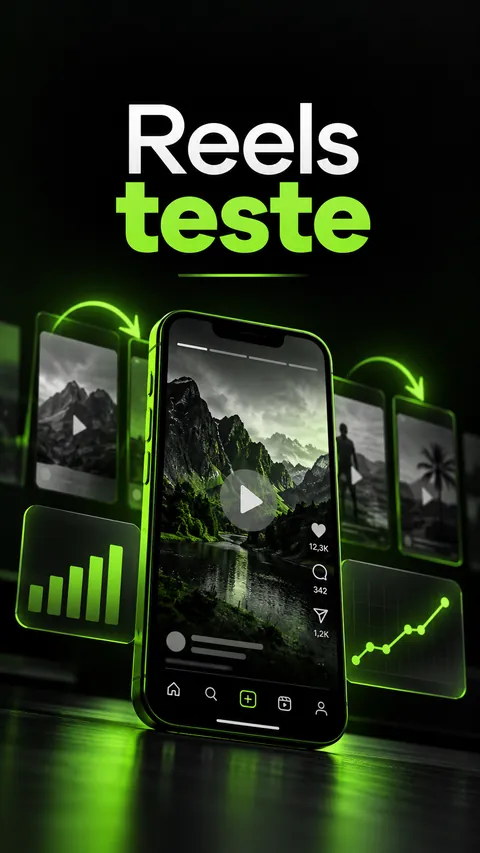
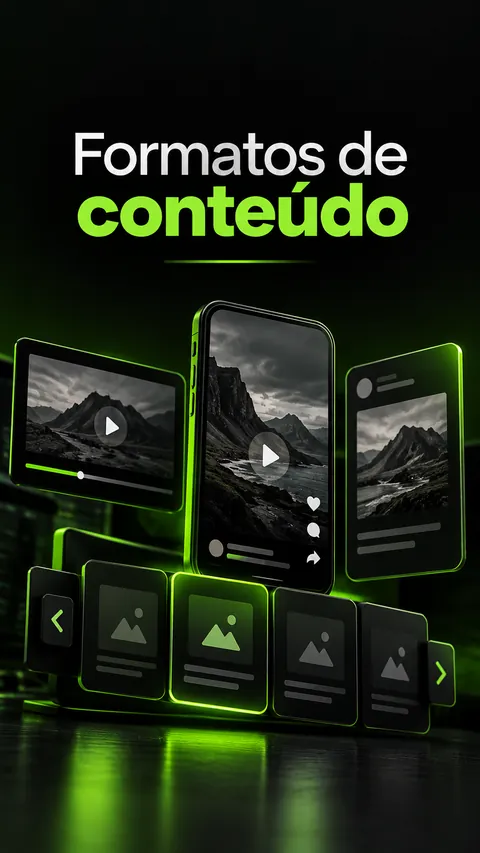
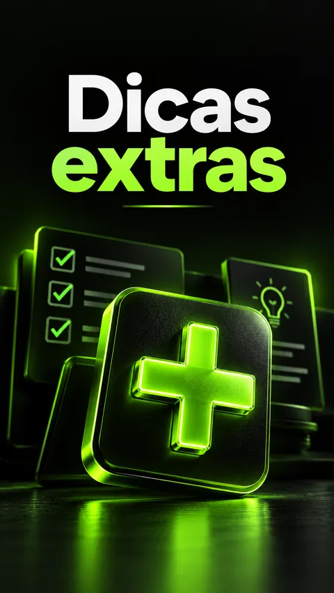
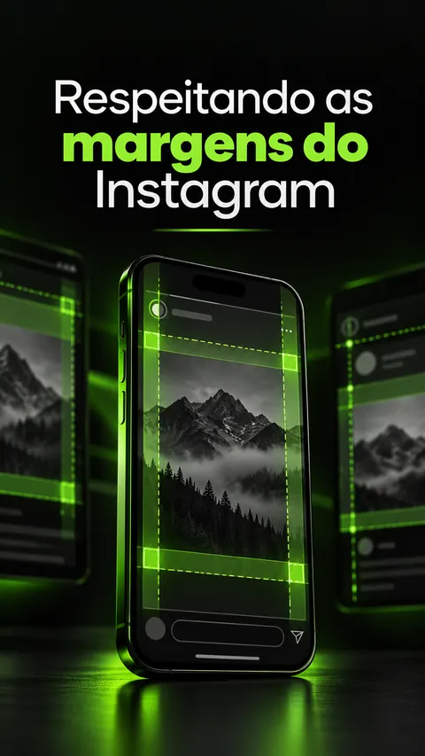
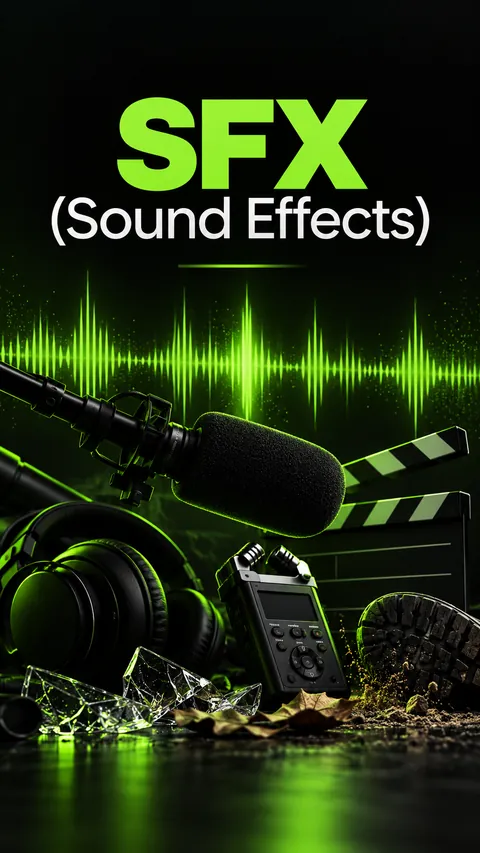
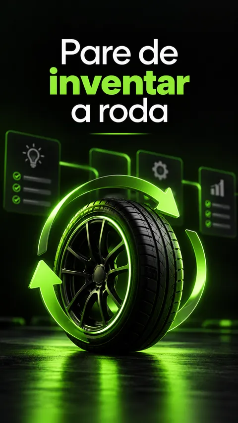
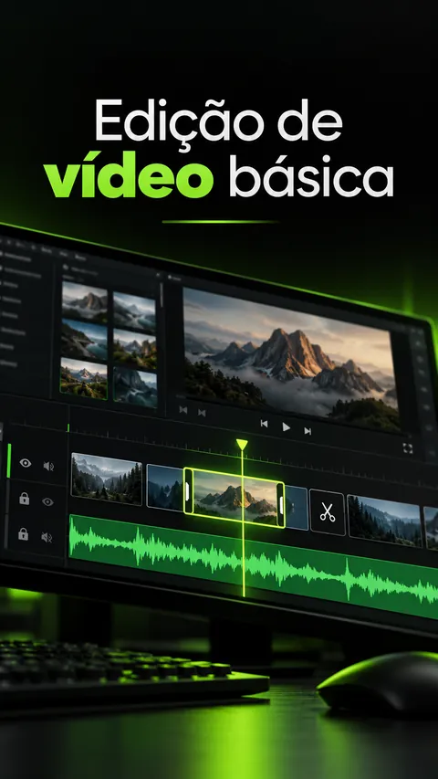

Você perde a pessoa
no "oi gente".
Quando você começa a se apresentar, o dedo dela já tá no meio da tela. Você passou duas horas gravando e ela decidiu em um segundo e meio. Foi embora sem nem saber o que você ia falar.
Você salva referência, acompanha creator, sabe na hora quando um vídeo é bom. Aí posta o seu e ele morre com 40 views, metade delas você mesmo assistindo de novo. Enquanto isso, gente que começou depois de você, com bem menos pra falar, já tá fechando publi. A diferença entre vocês cabe numa pasta. O Kit Creator Pack é a minha.
Abre sua galeria agora. Aposto que tem vídeo ali que nunca saiu, porque na hora de postar bateu a vergonha. E já era pra alguém ter te falado: quase nunca o problema é você. Você senta pra gravar sem nada decidido, e o vídeo já começa perdido antes de você abrir a câmera.
Quando você começa a se apresentar, o dedo dela já tá no meio da tela. Você passou duas horas gravando e ela decidiu em um segundo e meio. Foi embora sem nem saber o que você ia falar.
Você abre a câmera sem saber como começa, onde corta, como termina. Grava, assiste, acha forçado, grava de novo. No oitavo take fecha o app e promete que amanhã faz. Amanhã acontece igual.
Eco de quarto, som abafado, barulho da rua. Imagem tremida todo mundo releva, mas som ruim ninguém aguenta dois segundos, e é ali que seu vídeo passa a parecer amador. Dá pra resolver sem comprar microfone nenhum.
E normalmente você só enxerga um deles. Os outros três continuam matando seus vídeos em silêncio, toda semana. Montei o Kit em cima desses quatro.
É onde você perde mais gente. E é justo a parte que você improvisa na hora de gravar.
Sem esqueleto, você grava sem saber onde termina e o vídeo fica andando em círculo até a pessoa desistir.
Ninguém elogia áudio bom. Mas todo mundo vai embora quando ele tá ruim, e é o conserto mais rápido que existe.
Você não precisa virar editor. Precisa parar de perder três horas numa timeline pra um vídeo de trinta segundos.
Dez módulos, e nenhum é aula de duas horas pra assistir e esquecer. Você deixa aberto do lado do celular enquanto grava e usa no vídeo de hoje.







As aberturas que eu já usei e vi segurando gente. Você nunca mais encara a câmera sem saber qual é a primeira frase.
Dez esqueletos de vídeo prontos. Bateu o "o que eu posto hoje?", você pega um, preenche com o seu assunto e grava.
Você joga o áudio do celular ali e ele sai limpo do outro lado. É o que faz seu vídeo parar de soar gravado no quarto.
Os sons que eu coloco nos meus cortes. É detalhe pequeno, e é ele que separa vídeo cru de vídeo que parece de creator grande.
O vídeo vai primeiro pra quem não te segue. Se não for bem, seus amigos e seus seguidores nem ficam sabendo que ele existiu.
Onde cortar, quando deixar respirar, o que tirar. Só o que muda o resultado, sem virar curso de edição.
Onde não colocar texto nem rosto pra interface do app não cobrir nada. Parece bobagem até você ver sua legenda escondida atrás do botão de curtir.
Como pegar o que já funciona e adaptar pro seu jeito, em vez de quebrar a cabeça do zero toda vez que vai gravar.
Você entra num grupo com outros creators que tão começando também. Criar sozinho, sem ninguém pra trocar ideia, é o caminho mais rápido pra desistir.
Coisas que eu só aprendi errando na frente dos outros. Anos de tentativa e erro que você já pega prontos.
Eu não fiz faculdade de nada disso. Aprendi postando, errando na frente de todo mundo e refazendo até parar de dar vergonha.
Foram uns 8 anos até eu ter uma pasta só com o que realmente funcionava: o gancho que segurava, o formato que eu repetia porque dava certo, um jeito de salvar áudio ruim sem gastar nada.
O Kit Creator Pack é essa pasta. Não tenho fórmula pra te vender e não vou prometer que você viraliza. É o material que eu abro antes de gravar, e que agora você abre junto comigo.
Sério. Prefiro que você não compre do que abrir isso aqui esperando outra coisa.
R$ 39,90. Menos que um lanche, e bem menos do que te custa mais um mês vendo os outros crescerem. Deixei nesse preço de propósito, pro dinheiro não virar mais uma desculpa pra adiar.
Cai na sua mão na hora. Se em 7 dias você achar que não valeu, devolvo o dinheiro sem perguntar nada.
Não precisa. A ferramenta de áudio existe justamente pra quem grava no celular e não tem microfone. O resto parte do que você já tem na mão hoje.
Não é. São arquivos e ferramentas: os ganchos, os formatos, os efeitos sonoros, a ferramenta de áudio, as dicas e o grupo. Você abre, pega o que precisa naquele dia e fecha.
Vale mais, inclusive. Quem já posta sabe exatamente onde trava, e quase sempre é numa dessas três: a abertura, o som ou a hora de decidir o formato.
Hoje mesmo, se você quiser. Escolhe um gancho, pega um formato, grava e passa o áudio na ferramenta. Não tem nada pra estudar antes.
Um ano inteiro, e o que eu for atualizando nesse período entra junto sem você pagar de novo. Se preferir acesso pra sempre, tem essa opção na hora de finalizar a compra.
Você me pede o dinheiro de volta em até 7 dias e eu devolvo tudo. Não precisa justificar nada.
Daqui a um mês você vai estar um mês mais velho, com ou sem vídeo postado. Quem começou hoje já vai estar no décimo. E você vai continuar do lado de fora, salvando referência e dizendo que semana que vem começa. Por R$ 39,90, essa decisão é fácil.
Quero parar de adiar